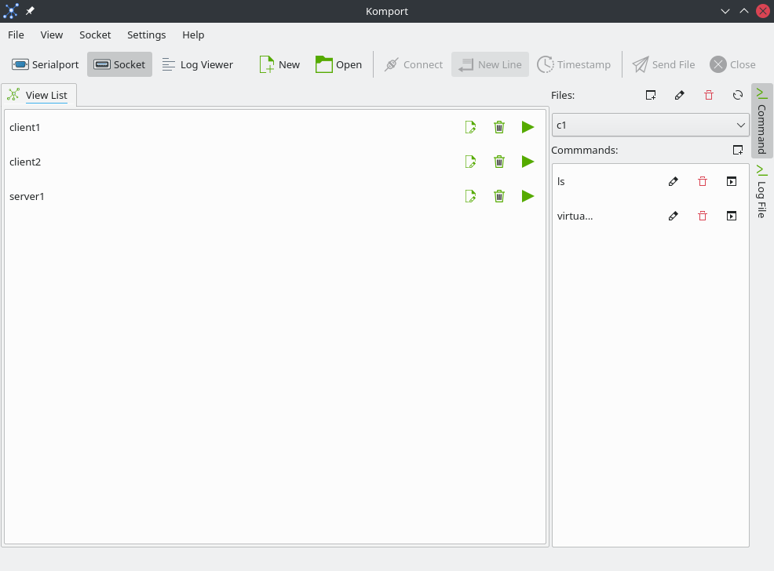
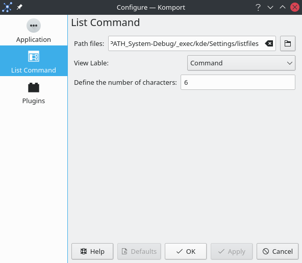

- list command:
-
With the ListCommand plugin, you can save commands based on the command name and time and description in a list.
Create file group
Rename the file
Delete file name
Re-loading the list of orders
Add command

The plugin list command with the komport socket
- Path file:
-
Save file location.
- View Table:
-
Show based on which stored content.
- Define the number:
-
Determine the number of characters in the list in the list. More than the specified number is replaced with 3 points.

The plugin list command with the komport socket